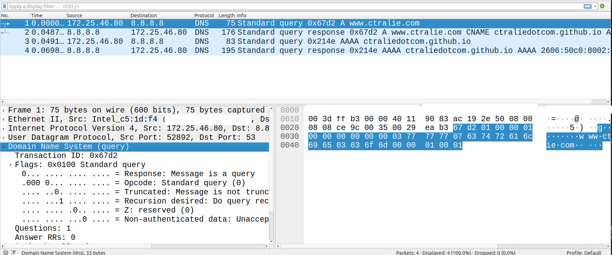
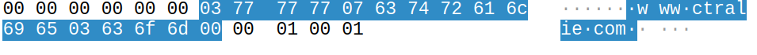

Homework 4: DNS Queries in Python
Chris Tralie
- Learning Objectives
- Description / Overview
- Getting Started / What To Submit
- Part 1: Recursive DNS Queries
- Part 2: Iterative DNS Queries
Learning Objectives
- Implement internet communication using sockets in python
- Send and receive binary data over UDP sockets according to protocol specifications
- Implement iterative DNS queries to resolve IP addresses from host strings
Description / Overview
Up to this point, we have taken it getaddrinfo for granted, allowing us to determine IP addresses for hosts such as www.ctralie.com. In this assignment, we will manually implement a Domain Name System (DNS) protocol query and response to determine the IP address of some host, which is what happens under the hood in getaddrinfo. Students must not use getaddrinfo at any point in this assignment!
By default, we'll use the DNS server 8.8.8.8 from google, which is capable of doing recursive queries, so it is possible to get the IP address after one query/response. But, as you'll recall from Kurose 2.4, iterative queries are more common, and students will implement these in the second part fo the assignment.
NOTE: Now that students have had enough experience coding socket programs in C to understand what's really going on, we're ready to start using sockets in python! This will make things significantly easier to manage, as error handling is much more seamless, and there are some convenience methods (such as sendall) automatically handle some of the nitty gritty things we had to do manually in C. As such, this assignment will serve as a warmup to socket programming in python, which we will use for more advanced topics in the network layer in subsequent assignments.
Getting Started / What To Submit
You can obtain the starter code for this assignment by using git:
You will be editing the file dns.py. This is the only file you need to submit to canvas when you're finished.
As an example of how to run this program, if you type the following in the terminal
then your program should print out the IP addresses ['185.199.109.153', '185.199.110.153', '185.199.108.153', '185.199.111.153'] and save a valid HTML web page to the file out.html
Note also that for the second part of the assignment, you will do iterative queries, in which case the following command should give the same answer done differently:
Part 1: Recursive DNS Queries
In this section, you will request an A record associated to a particular host by writing binary DNS messages and requesting recursive DNS so that you only need to send one message. You may want to review how to read/write binary data from a socket in python. I made a video about this here (though note that I use TCP sockets in that video and you'll want to use a UDP socket for this assignment):
Recursive DNS Request (10 Points)
First, you'll set up and send binary request for a recursive DNS request
Your Task
Setup code in dns.py to create a binary message for a DNS request, and send it over UDP port 53 (the port associated to DNS). Have a look at RFC 1035 second 4 to see the binary format that is required for this. Among other things, you will need to set RD ("recursive desired") flag in the header to true so that you only need to make one query to resolve the IP address. You will also need to ask one "question" for an A record associated to your host name.
Hints:
-
Python struct packing/unpacking
Look at the documentation for python struct at this link.
-
Sending/receiving chunks
When you send the message, be sure to send it all in one chunk (as opposed to the examples we had in class where we were sending the header and body as separate messages).
When you receive, you can receive in a single chunk. Asking for 4096 bytes is more than sufficient.
-
Constants
I already defined the constants that you'll need in the DNSHeader class, but just a note that they are also listed in the RFC in section 3.2
-
Wireshark
Wireshark is your best friend here when you're working to understand the DNS protocol. I'd highly recommend sending a dns packet out with nslookup and capturing it:
then look in wireshark to match the binary data with what the RFC says should be in it
-
URL string encoding
Note that the format of a URL string is very specific with DNS. It encodes each string separately after splitting on dots. As an example, "www.ctralie.com" would be split into["www", "ctralie", "com"]. Then we say the length of each component in one byte, followed by the string of each component. So we have 3, www, 7, ctralie, 3, com. And finally, it ends with a 0. 
Parsing DNS Response / Answers (10 Points)
Your Task
Read back the DNS response, and parse it to find the entries in the "answers" section that contains the IP addresses. Convert the IP addresses from binary to dot-separated strings and print them out to the console
Hints
-
You should ignore the questions and jump right to the answers section. Note that the name should be encoded exactly as it was in your request.
For the answers section, for this submission, you can assume that the variable length
NAMEin an answer resource record is 2 bytes. This will make more sense in the next part when you do iterative queries.
Web Request (5 Points)
Your Task
Once you have your IP addresses ready, initiate a TCP connection with that IP address over port 80, and make an HTTP 1.0 request for the / page on the host. Then, save the response to the binary file specified in save_path.
This video below may help, but again, do not use getaddrinfo, and don't use the host name when connecting; you must only use the IP you got from the above steps
Part 2: Iterative DNS Queries
Now that you've gotten a recursive query to work, you'll be implementing your own version of so-called "iterative DNS queries." The process is as follows for an A record:
- Make an A request at a root level DNS server, where you can find the IP address of an appropriate "top level domain" (TLD) server (e.g. .com, .org, .edu, etc)
- Make the same request at the TLD, which returns an authoritative DNS server
-
Make the same request at the authoritative server. This will either return an A record that you're looking for, or a CNAME ("canonical name") record. For instance, the canonical name for
www.ursinus.eduis actuallyursinus-prod.livewhale.net. If it's a CNAME record, then go back to step 1 and repeat the process, asking for an A record for this CNAME.
For more info on this process, jump to 19:15 in the video below.
Below are two tasks to walk you through this:
Compressed string parsing (5 Points)
As discussed in Section 4.1.4 of RFC 1035, DNS messages employ a form of string compression, reusing previous string definitions where possible. (I also discuss this at 13:29 in my DNS video). Now that you have to look at the Answer section, the Authority section, and the Additional section, this will certainly happen. So before we go all in on iterative DNS queries, it would be good to solve this problem first.
Your Task
Create a method get_name(res, idx_start) where res is a byte string of a DNS response, and idx_start is the index in res where a string definition starts. Return from this method a tuple (name, idx), where name is the full name string (including dots), and idx is the index right after the last byte of the name definition.
Worked example
As an example, consider this response for an A name record request for images.google.com. The first answer gives a CNAME images.l.google.com. This can be compressed, since it ends in google.com, which occurred previously in the response. The wireshark dump below shows what's going on:
First we have a string google of length 6, followed by the string l of length 1. Finally, we have a pointer flag c0 to the location 0x13 (19 decimal). If we follow this, it will take us to google.com in the questions section (note that it's jumped past the images. part in the question since we already defined that).
To test this out, below is some code to create a bytes object called res for this response, followed by a call to get_name:
If your code is working properly, name should be images.l.google.com, and idx should be 58, which is the index directly after this string definition.
Iterative DNS Request (20 points)
Now we're ready to do an iterative DNS request
Your Task
Augment your code so that if opt.recursive is False, you perform an iterative DNS query instead of a recursive one. You can assume that the DNS server provided in the command line is a root level DNS server. To get such a server, you can call dig, as I show at 20:50 in my DNS video
Tips
- Be sure to set
RD(recursion desired) to 0 now!